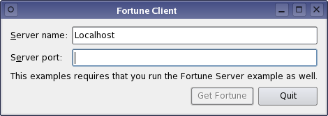

Fortune Client Example
This example uses QTcpSocket, and is intended to be run alongside the Fortune Server example or the Threaded Fortune Server example.

This example uses a simple QDataStream-based data transfer protocol to request a line of text from a fortune server (from the Fortune Server example). The client requests a fortune by simply connecting to the server. The server then responds with a 16-bit (quint16) integer containing the length of the fortune text, followed by a QString.
QTcpSocket supports two general approaches to network programming:
- The asynchronous (non-blocking) approach. Operations are scheduled and performed when control returns to Qt's event loop. When the operation is finished, QTcpSocket emits a signal. For example, QTcpSocket::connectToHost() returns immediately, and when the connection has been established, QTcpSocket emits connected().
- The synchronous (blocking) approach. In non-GUI and multithreaded applications, you can call the
waitFor...()functions (e.g., QTcpSocket::waitForConnected()) to suspend the calling thread until the operation has completed, instead of connecting to signals.
In this example, we will demonstrate the asynchronous approach. The Blocking Fortune Client Example illustrates the synchronous approach.
Our class contains some data and a few private slots:
class Client : public QDialog { Q_OBJECT public: explicit Client(QWidget *parent = Q_NULLPTR); private slots: void requestNewFortune(); void readFortune(); void displayError(QAbstractSocket::SocketError socketError); void enableGetFortuneButton(); void sessionOpened(); private: QComboBox *hostCombo; QLineEdit *portLineEdit; QLabel *statusLabel; QPushButton *getFortuneButton; QTcpSocket *tcpSocket; QString currentFortune; quint16 blockSize; QNetworkSession *networkSession; };
Other than the widgets that make up the GUI, the data members include a QTcpSocket pointer, a copy of the fortune text currently displayed, and the size of the packet we are currently reading (more on this later).
The socket is initialized in the Client constructor. We'll pass the main widget as parent, so that we won't have to worry about deleting the socket:
Client::Client(QWidget *parent) : QDialog(parent) , hostCombo(new QComboBox) , portLineEdit(new QLineEdit) , getFortuneButton(new QPushButton(tr("Get Fortune"))) , tcpSocket(new QTcpSocket(this)) , blockSize(0) , networkSession(Q_NULLPTR) { setWindowFlags(windowFlags() & ~Qt::WindowContextHelpButtonHint); ... , tcpSocket(new QTcpSocket(this))
The only QTcpSocket signals we need in this example are QTcpSocket::readyRead(), signifying that data has been received, and QTcpSocket::error(), which we will use to catch any connection errors:
...
connect(tcpSocket, &QIODevice::readyRead, this, &Client::readFortune);
typedef void (QAbstractSocket::*QAbstractSocketErrorSignal)(QAbstractSocket::SocketError);
connect(tcpSocket, static_cast<QAbstractSocketErrorSignal>(&QAbstractSocket::error),
...
}
Clicking the Get Fortune button will invoke the requestNewFortune() slot:
void Client::requestNewFortune() { getFortuneButton->setEnabled(false); blockSize = 0; tcpSocket->abort(); tcpSocket->connectToHost(hostCombo->currentText(), portLineEdit->text().toInt()); }
In this slot, we initialize blockSize to 0, preparing to read a new block of data. Because we allow the user to click Get Fortune before the previous connection finished closing, we start off by aborting the previous connection by calling QTcpSocket::abort(). (On an unconnected socket, this function does nothing.) We then proceed to connecting to the fortune server by calling QTcpSocket::connectToHost(), passing the hostname and port from the user interface as arguments.
As a result of calling connectToHost(), one of two things can happen:
- The connection is established. In this case, the server will send us a fortune. QTcpSocket will emit readyRead() every time it receives a block of data.
- An error occurs. We need to inform the user if the connection failed or was broken. In this case, QTcpSocket will emit error(), and
Client::displayError()will be called.
Let's go through the error() case first:
void Client::displayError(QAbstractSocket::SocketError socketError) { switch (socketError) { case QAbstractSocket::RemoteHostClosedError: break; case QAbstractSocket::HostNotFoundError: QMessageBox::information(this, tr("Fortune Client"), tr("The host was not found. Please check the " "host name and port settings.")); break; case QAbstractSocket::ConnectionRefusedError: QMessageBox::information(this, tr("Fortune Client"), tr("The connection was refused by the peer. " "Make sure the fortune server is running, " "and check that the host name and port " "settings are correct.")); break; default: QMessageBox::information(this, tr("Fortune Client"), tr("The following error occurred: %1.") .arg(tcpSocket->errorString())); } getFortuneButton->setEnabled(true); }
We pop up all errors in a dialog using QMessageBox::information(). QTcpSocket::RemoteHostClosedError is silently ignored, because the fortune server protocol ends with the server closing the connection.
Now for the readyRead() alternative. This signal is connected to Client::readFortune():
void Client::readFortune() { QDataStream in(tcpSocket); in.setVersion(QDataStream::Qt_4_0); if (blockSize == 0) { if (tcpSocket->bytesAvailable() < (int)sizeof(quint16)) return; in >> blockSize; } if (tcpSocket->bytesAvailable() < blockSize) return;
The protocol is based on QDataStream, so we start by creating a stream object, passing the socket to QDataStream's constructor. We then explicitly set the protocol version of the stream to QDataStream::Qt_4_0 to ensure that we're using the same version as the fortune server, no matter which version of Qt the client and server use.
Now, TCP is based on sending a stream of data, so we cannot expect to get the entire fortune in one go. Especially on a slow network, the data can be received in several small fragments. QTcpSocket buffers up all incoming data and emits readyRead() for every new block that arrives, and it is our job to ensure that we have received all the data we need before we start parsing. The server's response starts with the size of the packet, so first we need to ensure that we can read the size, then we will wait until QTcpSocket has received the full packet.
QString nextFortune;
in >> nextFortune;
if (nextFortune == currentFortune) {
QTimer::singleShot(0, this, &Client::requestNewFortune);
return;
}
currentFortune = nextFortune;
statusLabel->setText(currentFortune);
getFortuneButton->setEnabled(true);
}
We proceed by using QDataStream's streaming operator to read the fortune from the socket into a QString. Once read, we can call QLabel::setText() to display the fortune.
Files:
See also Fortune Server Example and Blocking Fortune Client Example.